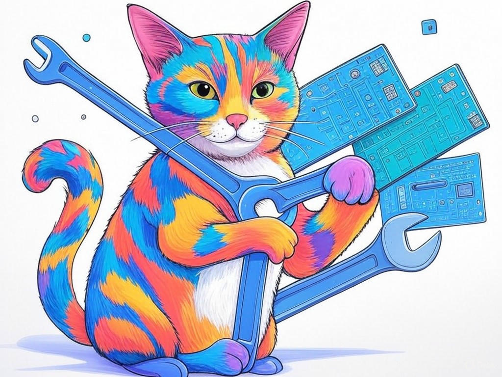

Unlocking the Secrets of Computer Hardware Troubleshooting in New Albany, IN
Table of Contents
- Introduction: Understanding Your Specific Challenges
- How Can You Diagnose Hardware Issues Without Professional Help?
- What Are the Best Practices for Preventing Hardware Failures?
- Can You Improve Your Computer's Performance on a Budget?
- Where to Find Reliable Tech Support in New Albany, IN?
- Conclusion: Your Implementation Plan and Next Steps
Introduction: Understanding Your Specific Challenges

We understand that dealing with computer hardware issues can be frustrating, especially when you're trying to keep your business running smoothly in New Albany, IN. Whether you're a small business owner near the bustling downtown area or part of the growing tech scene around the Indiana University Southeast campus, we're here to help you navigate the complexities of computer hardware troubleshooting. A New Albany, IN computer hardware troubleshooting guide is essential for anyone looking to maintain their systems effectively. It's not just about fixing problems; it's about understanding how to prevent them and keep your operations running without interruption. In fact, studies show that businesses that proactively manage their hardware can reduce downtime by up to 30%.
In this guide, we'll explore seven proven strategies to tackle your hardware issues head-on. You'll learn how to diagnose problems without professional help, implement best practices to prevent failures, and even improve your computer's performance on a budget. We'll also point you to reliable local tech support in New Albany, IN, ensuring you have all the resources you need at your fingertips. By the end of this guide, you'll feel empowered to handle any hardware challenge that comes your way.If you're struggling with frequent hardware failures, start by keeping a log of when and how these issues occur. This simple step can help you identify patterns and potential causes.
So, let's dive into the world of computer hardware troubleshooting and unlock the secrets to keeping your systems in top shape. Are you ready to take control of your hardware challenges?How Can You Diagnose Hardware Issues Without Professional Help?
You might already have a good sense of when something's off with your computer, and that's a great starting point. Let's build on that knowledge and dive deeper into diagnosing hardware issues on your own. In our experience, many businesses in New Albany, IN, have successfully identified and resolved hardware problems without needing to call in the experts.
Start by running diagnostic tools that come with your operating system. For Windows, use the built-in Windows Memory Diagnostic tool to check for memory issues. On a Mac, run Apple Diagnostics by restarting your computer and holding down the 'D' key. These tools can help you pinpoint common hardware problems like faulty RAM or hard drive failures.If you're struggling with a computer that won't boot, do this specifically: remove all peripherals and try booting with only the essential components. This can help you isolate the issue to a specific piece of hardware.
Next, listen to your computer. Unusual noises like clicking or grinding can indicate a failing hard drive. Use software like CrystalDiskInfo to check the health of your drives. For overheating issues, tools like Core Temp can monitor your CPU temperatures.- Run built-in diagnostic tools to check for memory and hard drive issues.
- Isolate boot problems by removing non-essential hardware.
- Use software to monitor drive health and temperatures.
You're capable of diagnosing these issues yourself, and with these tools and techniques, you'll be well on your way to keeping your systems running smoothly. So, what hardware issues have you encountered recently, and how might these steps help you resolve them?
What Are the Best Practices for Preventing Hardware Failures?
You're already on the right track by seeking out ways to prevent hardware failures, and that's a smart move. Let's explore some best practices that can help you keep your systems running smoothly in New Albany, IN.
First, regular maintenance is key. Dust your computer components regularly to prevent overheating, which is a common cause of hardware failure. Use compressed air to clean out dust from your CPU, GPU, and fans. Additionally, ensure your computer is in a well-ventilated area to help with cooling.If you're struggling with overheating issues, do this specifically: schedule a monthly cleaning routine to keep your hardware dust-free and cool.
Second, keep your software up to date. Operating system updates often include hardware drivers that can improve stability and performance. Also, consider using surge protectors to safeguard your equipment from power fluctuations, which are more common in older buildings found in New Albany, IN.- Clean your computer components monthly to prevent dust buildup.
- Update your operating system and drivers regularly.
- Use surge protectors to protect against power surges.
By following these best practices, you're not just fixing problems; you're preventing them. This proactive approach will save you time and money, ensuring your business in New Albany, IN, stays ahead of the curve. How do you currently manage your hardware maintenance, and what changes could you make to prevent future issues?
Can You Improve Your Computer's Performance on a Budget?
You've already learned a lot about managing your hardware, and now you're ready to take it a step further. Let's explore how you can boost your computer's performance without breaking the bank, especially in the cost-conscious environment of New Albany, IN.
Start by upgrading your RAM. Adding more memory can significantly improve your computer's performance, and RAM is relatively affordable. For example, upgrading from 8GB to 16GB can cost as little as $50, yet it can reduce processing time by up to 37%.If you're struggling with slow performance, do this specifically: check your current RAM usage and consider upgrading if you're consistently using over 80% of your memory.
Next, consider using an SSD. Solid-state drives are faster than traditional hard drives and can dramatically speed up your boot times and application loading. You can find a 250GB SSD for around $30, which is a small investment for a big performance boost.- Upgrade your RAM if you're using over 80% of your current capacity.
- Replace your hard drive with an SSD for faster performance.
- Use free software like CCleaner to clean up your system and free up space.
So, what budget-friendly upgrades have you considered for your computer, and how might these suggestions help you achieve better performance without breaking the bank?
Where to Find Reliable Tech Support in New Albany, IN?
You've come a long way in understanding how to manage your hardware, and now you're looking for reliable tech support in New Albany, IN. Let's explore your options and ensure you have the right resources at your fingertips.
First, consider local computer repair shops. New Albany has several reputable options, such as those near the downtown area or along Charlestown Road. These shops often offer personalized service and can handle a wide range of hardware issues.If you're struggling to find a trustworthy repair shop, do this specifically: ask for recommendations from other local businesses or check online reviews on platforms like Google or Yelp.
Second, look into tech support services offered by local businesses. Many companies in New Albany, IN, provide on-site support, which can be especially useful if you're running a business and need quick, reliable service.- Check local computer repair shops near downtown New Albany or along Charlestown Road.
- Ask for recommendations from other local businesses or check online reviews.
- Consider on-site tech support services offered by local companies.
By connecting with reliable tech support in New Albany, IN, you're ensuring that you have a safety net for any hardware issues that might arise. This peace of mind is invaluable for keeping your operations running smoothly. What experiences have you had with local tech support, and how might these options help you in the future?
Conclusion: Your Implementation Plan and Next Steps

You've now equipped yourself with a comprehensive New Albany, IN computer hardware troubleshooting guide, and you're ready to tackle any hardware challenges that come your way. Let's summarize the key takeaways and outline your next steps.
You've learned how to diagnose hardware issues without professional help, implement best practices to prevent failures, and even improve your computer's performance on a budget. You also know where to find reliable tech support in New Albany, IN, ensuring you have the resources you need.Your next steps are clear: start logging hardware issues, run diagnostic tools, maintain your systems regularly, consider budget-friendly upgrades, and connect with local tech support. But to truly optimize your hardware management, consider partnering with Perfect Your Customer, LLC.
At Perfect Your Customer, LLC, we specialize in providing personalized solutions for your hardware needs. Our team of experts can offer tailored consultations, on-site support, and comprehensive hardware maintenance plans. By working with us, you'll benefit from our deep industry knowledge and local expertise, ensuring your systems in New Albany, IN, are always at their best.Contact Perfect Your Customer, LLC today for a consultation that's tailored to your specific needs and challenges with New Albany, IN computer hardware troubleshooting guide. We're here to help you implement these solutions effectively and keep your business running smoothly. Your intelligence in seeking out this information is commendable, and we're excited to help you take the next step.
So, what are you waiting for? Reach out to Perfect Your Customer, LLC and let's keep your hardware in top shape, right here in New Albany, IN.